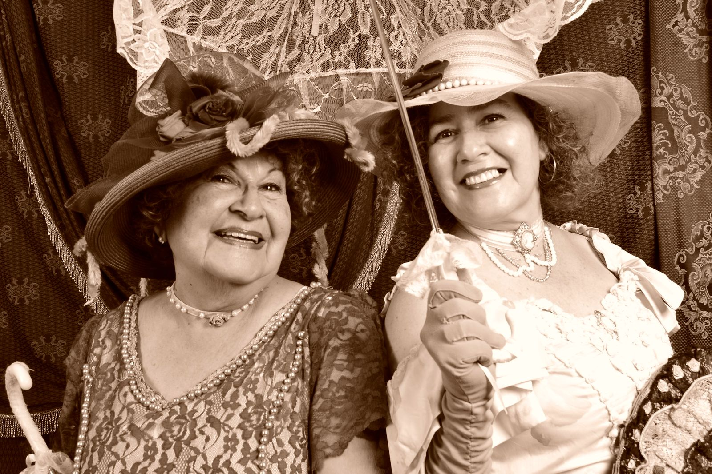
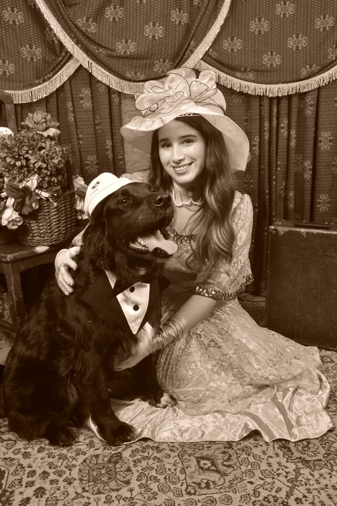

Arriendo de trajes
Sesiones
Vamos a tu evento
Contáctanos
Arriendo de trajes
Sesiones
Vamos a tu evento
Contacto
Pide tu hora
Imagen 1 — imagenes/ses-01.jpg

>
Imagen 2 — imagenes/ses-02.jpg
Imagen 3 — imagenes/ses-03.jpg
Cumpleaños

Imagen 4 — imagenes/ses-04.jpg
Imagen 5 — imagenes/ses-05.jpg
Imagen 6 — imagenes/ses-06.jpg
Revisa nuestros valores
 Imagen 3 — imagenes/ses-03.jpg
Imagen 3 — imagenes/ses-03.jpg